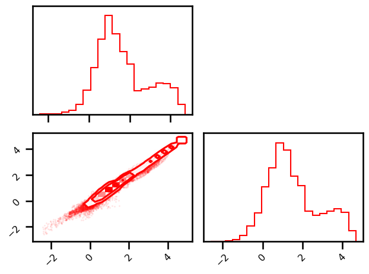
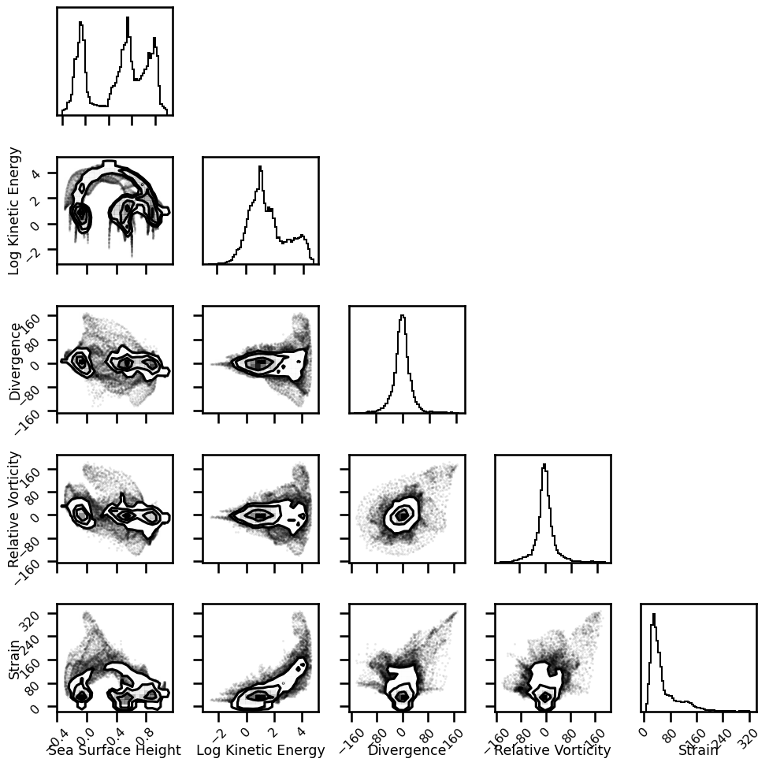

Pixel Densities#
In the ocean community, we often operator in the Fourier domain. This is useful for assessing the quality of our models and it can also be useful for learning. In this notebook, we showcase how oceanbench has two fundamental transformations that are useful for both cases: isotropic and spacetime Fourier transformations.
import autoroot
import typing as tp
from dataclasses import dataclass
import numpy as np
import pandas as pd
import xarray as xr
import einops
from metpy.units import units
import pint_xarray
import xarray_dataclasses as xrdataclass
from oceanbench._src.datasets.base import XRDAPatcher
from oceanbench._src.geoprocessing.spatial import transform_360_to_180
import matplotlib.pyplot as plt
import matplotlib.colors as colors
import matplotlib.ticker as ticker
import seaborn as sns
sns.reset_defaults()
sns.set_context(context="talk", font_scale=0.7)
%load_ext autoreload
%autoreload 2
!ls /gpfswork/rech/yrf/commun/data_challenges/dc20a_osse/staging/results/4DVarNet
file = "/gpfswork/rech/yrf/commun/data_challenges/dc20a_osse/staging/results/4DVarNet/2020a_SSH_mapping_NATL60_4DVarNet_v2022_nadirswot_GF_GF.nc"
# file = "/gpfswork/rech/yrf/commun/data_challenges/dc20a_osse/staging/results/MIOST/2020a_SSH_mapping_NATL60_MIOST_swot_en_j1_tpn_g2.nc"
# file = "/gpfswork/rech/yrf/commun/data_challenges/dc20a_osse/staging/results/DUACS/ssh_DUACS_swot_4nadir.nc"
# file = "/gpfswork/rech/yrf/commun/data_challenges/dc20a_osse/staging/results/BFNQG/2020a_SSH_mapping_NATL60_BFN_Steady_State_QG1L_swot_en_j1_tpn_g2.nc"
file_ref = "/gpfswork/rech/yrf/commun/data_challenges/dc20a_osse/staging/natl60/NATL60-CJM165_GULFSTREAM_ssh_y2013.1y.nc"
!ls $file
# # Domain for analysis: Gulfstream
# time_min = numpy.datetime64('2012-10-22') # domain min time
# time_max = numpy.datetime64('2012-12-03') # domain max time
# lon_min = -64.975 # domain min lon
# lon_max = -55.007 # domain max lon
# lat_min = 33.025 # domain min lat
# lat_max = 42.9917 # domain max lat
def open_ssh_results(file, variable="ssh_mod"):
da = xr.open_dataset(file, decode_times=True)
da = da.sortby("time")
da = da.rename({variable: "ssh"})
da = da.sel(
time=slice("2012-10-22", "2012-12-01"),
lon=slice(-64.975, -55.007),
lat=slice(33.025, 42.9917),
drop=True
)
da = da.resample(time="1D").mean()
return da
def open_ssh_reference(file, variable="gssh"):
da = xr.open_dataset(file, decode_times=False)
da["time"] = pd.to_datetime(da.time)
da = da.sortby("time")
da = da.sel(
time=slice("2012-10-22", "2012-12-01"),
lon=slice(-64.975, -55.007),
lat=slice(33.025, 42.9917),
drop=True
)
# da = da.rename({variable: "ssh"})
return da
def correct_names(da):
da["ssh"].attrs["long_name"] = "Sea Surface Height"
da["ssh"].attrs["standard_name"] = "sea_surface_height"
da["lat"] = da.lat.pint.quantify("degrees_north")
da["lat"].attrs["long_name"] = "Latitude"
da["lat"].attrs["standard_name"] = "latitude"
da["lon"].attrs["long_name"] = "Longitude"
da["lon"].attrs["standard_name"] = "longitude"
da["lon"] = transform_360_to_180(da.lon)
return da
da_ref = open_ssh_reference(file_ref)
da = open_ssh_results(file, "ssh")
da_ref = correct_names(da_ref)
da = correct_names(da)
Regridding#
from oceanbench._src.geoprocessing.gridding import grid_to_regular_grid
da = grid_to_regular_grid(
src_grid_ds=da.pint.dequantify(),
tgt_grid_ds=da_ref.pint.dequantify(), keep_attrs=True
)
da
<xarray.Dataset>
Dimensions: (time: 41, lat: 199, lon: 199)
Coordinates:
* time (time) datetime64[ns] 2012-10-22 2012-10-23 ... 2012-12-01
* lon (lon) float64 -64.95 -64.9 -64.85 -64.8 ... -55.15 -55.1 -55.05
* lat (lat) float64 33.05 33.1 33.15 33.2 33.25 ... 42.8 42.85 42.9 42.95
Data variables:
ssh (time, lat, lon) float64 0.646 0.6551 0.6628 ... -0.1803 -0.1848
Attributes:
regrid_method: bilinearInterpolate NANs#
from oceanbench._src.geoprocessing.interpolate import fillnans
da = fillnans(da, dims=["lat", "lon"], method="slinear", fill_value="extrapolate")
da_ref = fillnans(da_ref, dims=["lat", "lon"], method="slinear", fill_value="extrapolate")
da_ref = da_ref.transpose("time", "lat", "lon")
da = da.transpose("time", "lat", "lon")
Units#
def add_units(da):
# da = da.pint.quantify(
# {"ssh": "meter",
# "lon": "degrees_east",
# "lat": "degrees_north",
# "time": "nanoseconds"
# }
# )
# da
da = da.pint.dequantify()
da["ssh"] = da.ssh * units.meter
return da
da = add_units(da)
da_ref = add_units(da_ref)
Derived Variables#
from oceanbench._src.geoprocessing import geostrophic as geocalc
def calculate_derived_variables(da):
da = geocalc.streamfunction(da, "ssh", f0=1e-5)
da = geocalc.geostrophic_velocities(da, variable="psi")
da = geocalc.kinetic_energy(da, variables=["u", "v"])
da = geocalc.relative_vorticity(da, variables=["u", "v"])
da = geocalc.divergence(da, variables=["u", "v"])
da = geocalc.strain_magnitude(da)
da = geocalc.coriolis_normalized(da, variable="vort_r")
da = geocalc.coriolis_normalized(da, variable="div")
da = geocalc.coriolis_normalized(da, variable="strain")
return da
da = calculate_derived_variables(da)
da_ref = calculate_derived_variables(da_ref)
import corner
pixel_stack = np.vstack([da_ref.ssh.mean(dim="time").values.ravel(), da.ssh.mean(dim="time").values.ravel()]).T
pixel_stack = np.log(np.vstack([da_ref.ke.mean(dim="time").values.ravel(), da.ke.mean(dim="time").values.ravel()]).T)
# pixel_stack = np.vstack([da_ref.vort_r.mean(dim="time").values.ravel(), da.vort_r.mean(dim="time").values.ravel()]).T
# pixel_stack = np.vstack([da_ref.strain.mean(dim="time").values.ravel(), da.strain.mean(dim="time").values.ravel()]).T
fig = plt.figure()
corner.corner(pixel_stack, smooth=0.1, fig=fig, color="Red", alpha=0.2)
plt.tight_layout()
plt.show()

da
<xarray.Dataset>
Dimensions: (time: 41, lat: 199, lon: 199)
Coordinates:
* time (time) datetime64[ns] 2012-10-22 2012-10-23 ... 2012-12-01
* lon (lon) float64 -64.95 -64.9 -64.85 -64.8 ... -55.15 -55.1 -55.05
* lat (lat) float64 33.05 33.1 33.15 33.2 33.25 ... 42.8 42.85 42.9 42.95
Data variables:
ssh (time, lat, lon) float64 [m] 0.646 0.6551 ... -0.1803 -0.1848
psi (time, lat, lon) float64 [m²/s] 6.335e+05 6.424e+05 ... -1.812e+05
u (time, lat, lon) float64 [m/s] 2.717 2.772 ... -0.03116 -0.1886
v (time, lat, lon) float64 [m/s] 2.032 1.757 1.635 ... -1.139 -1.012
ke (time, lat, lon) float64 [m²/s²] 5.757 5.385 4.43 ... 0.6488 0.5295
vort_r (time, lat, lon) float64 [] -16.18 -39.79 -36.06 ... 5.725 -14.51
strain (time, lat, lon) float64 [] 75.82 36.46 50.62 ... 31.56 25.92 63.8
div (time, lat, lon) float64 [] -73.25 -10.64 4.907 ... 13.27 69.32
Attributes:
regrid_method: bilinearJoint Densities#
NATL60 Simulation#
pixel_stack = np.vstack([
da_ref.ssh.mean(dim="time").values.ravel(),
np.log(da_ref.ke.mean(dim="time").values.ravel()),
da_ref.div.mean(dim="time").values.ravel(),
da_ref.vort_r.mean(dim="time").values.ravel(),
da_ref.strain.mean(dim="time").values.ravel()
]).T
var_names = [
"Sea Surface Height", "Log Kinetic Energy", "Divergence", "Relative Vorticity", "Strain"
]
df = pd.DataFrame(data=pixel_stack, columns=var_names)
df.head()
| Sea Surface Height | Log Kinetic Energy | Divergence | Relative Vorticity | Strain | |
|---|---|---|---|---|---|
| 0 | 0.584587 | 2.192933 | 0.700701 | 43.072588 | 79.848842 |
| 1 | 0.572537 | 2.064038 | -1.159269 | 39.950690 | 83.992863 |
| 2 | 0.561261 | 1.972739 | -4.000367 | 37.206583 | 81.590853 |
| 3 | 0.550573 | 1.924734 | -5.941595 | 35.846746 | 79.299585 |
| 4 | 0.540427 | 1.893981 | -4.480140 | 36.119179 | 81.306765 |
# sns.scatterplot(),
sns.kdeplot()
<Axes: >
import numpy as np
import seaborn as sns
import matplotlib.pyplot as plt
sns.set_theme(style="dark")
# Simulate data from a bivariate Gaussian
n = 10000
mean = [0, 0]
cov = [(2, .4), (.4, .2)]
rng = np.random.RandomState(0)
x, y = rng.multivariate_normal(mean, cov, n).T
# Draw a combo histogram and scatterplot with density contours
f, ax = plt.subplots(figsize=(6, 6))
sns.scatterplot(x=x, y=y, s=5, color=".15")
sns.histplot(x=x, y=y, bins=50, pthresh=.1, cmap="mako")
sns.kdeplot(x=x, y=y, levels=5, color="w", linewidths=1)
# g = sns.PairGrid(df.sample(5_000))
g = sns.PairGrid(df.sample(10_000))
# g.map_upper(sns.scatterplot, size=0.1)
g.map_lower(sns.kdeplot, levels=4, gridsize=50)
g.map_lower(sns.histplot, bins=50, pthresh=.1)
# g.map_diag(sns.kdeplot, lw=3, legend=False, levels=4, gridsize=50)
g.map_diag(sns.histplot, bins=50, pthresh=.1)
<seaborn.axisgrid.PairGrid at 0x15282516fa00>

fig = plt.figure(figsize=(10,10))
corner.corner(df, fig=fig, labels=var_names, hist_bin_factor=3)
plt.tight_layout()
plt.show()
WARNING:root:Pandas support in corner is deprecated; use ArviZ directly
Reconstruction#
pixel_stack = np.vstack([
da.ssh.mean(dim="time").values.ravel(),
np.log(da.ke.mean(dim="time").values.ravel()),
da.div.mean(dim="time").values.ravel(),
da.vort_r.mean(dim="time").values.ravel(),
da.strain.mean(dim="time").values.ravel()
]).T
var_names = [
"Sea Surface Height", "Log Kinetic Energy", "Divergence", "Relative Vorticity", "Strain"
]
# g = sns.PairGrid(df.sample(5_000))
g = sns.PairGrid(df.sample(10_000))
# g.map_upper(sns.scatterplot, size=0.1)
g.map_lower(sns.kdeplot, levels=4, gridsize=50)
g.map_lower(sns.histplot, bins=50, pthresh=.1)
# g.map_diag(sns.kdeplot, lw=3, legend=False, levels=4, gridsize=50)
g.map_diag(sns.histplot, bins=50, pthresh=.1)
<seaborn.axisgrid.PairGrid at 0x152823c7de10>
fig = plt.figure(figsize=(10,10))
corner.corner(pixel_stack, fig=fig, labels=var_names, hist_bin_factor=3)
plt.tight_layout()
plt.show()
